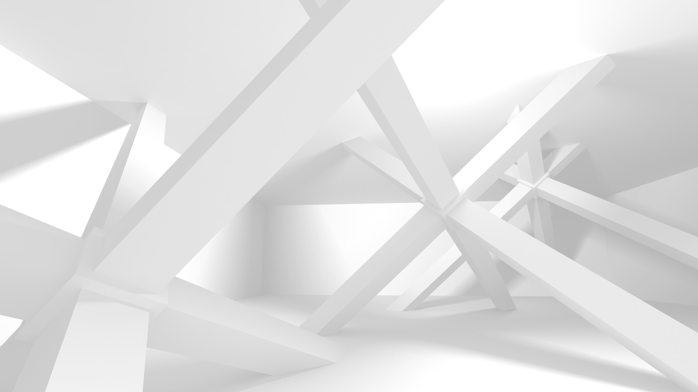
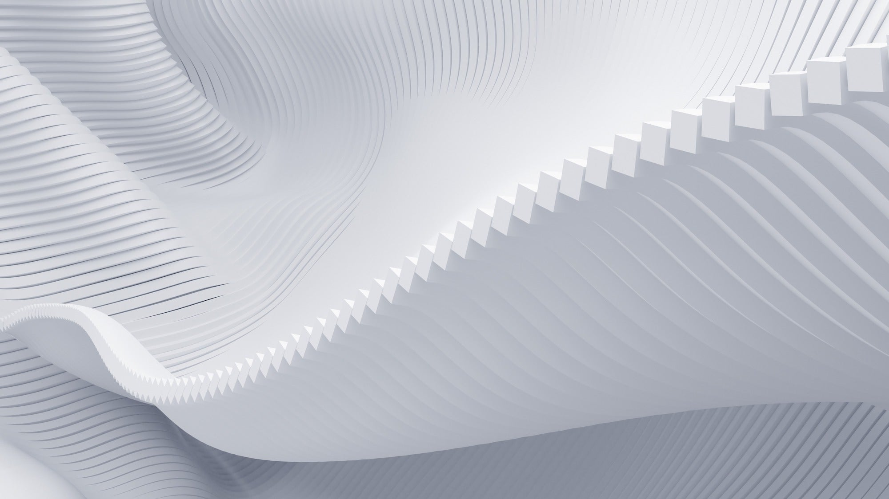
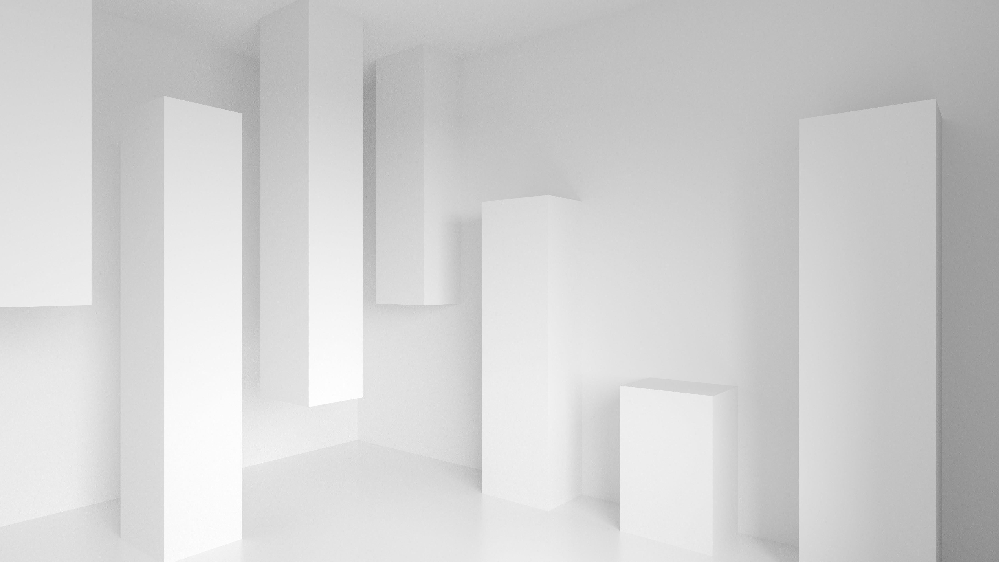
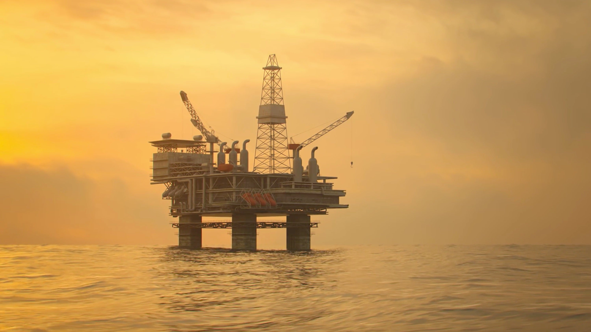

Foundry For Energy: Optimizing Operations with Vertex
Foundry is empowering energy companies to optimize operations with real-time digital twin solutions
See what Foundry can do for your enterprise.
Build a digital twin of your business with Vertex
Connect essential logic with data to create a digital representation of your entire business.
Digital twins allow for testing and experimentation while enabling operators to maintain rigorous safety and uptime requirements. This allows for digital exploration of numerous possibilities to identify the best scenario to replicate in the physical world. Vertex allows energy producers to:
Build a core digital picture containing the key semantics and kinetics of your world
Build actionable business applications on top of your digital twin, connecting data to operations
Run what-if analysis and compound simulations
Make smarter, data-driven decisions at the edge of your business
Connect local decisions with global ones - from the oil field to the C-suite
Experience the benefits of digital experimentation
Operations Monitoring 
Separate the signal from the noise. Vertex digital twins are configured with leveled safety limits for sensor feeds to provide real-time, contextualized signal for changing conditions on the asset. The most critical events are prioritized for operation decisioning and action.
Performance Simulation 
Analyze current, and forecast future, performance. Simulation mesh allows for continuous evaluation of the expected behavior of the asset by flowing through real-time sensor and asset configuration data, providing a baseline for comparison. Foundry can then interrogate these results to construct performance metrics, trend analyses, and yield assessments.
Digital Twin Health Build trust in your digital twin to build trust in your operational decisions. Once your twin is configured to be a true mirror, deviation between simulations and actuals provide signal on performance or reliability issues for equipment, and can provide a live view on the health of both the asset and the twin.
Identify Opportunities Take your digital twin where your asset has never gone before. Vertex allows teams to directly test configurations, visualize the impact on the current plant based on live sensor data, save these scenarios as opportunities, and schedule work orders to deploy the change in the field.
Optimize Yield 
Find the perfect asset configuration. Leverage built-in AI techniques to evaluate thousands of possible configurations and surface the setpoint based on goals (min gas, min carbon impact). Vertex can identify global optima across the value chain.
Integrate Your IT & Operations Vertex works, no matter what hardware or software you already use. Avoid technology bloat and IT overhead. Connect your technology stack to the full operating picture. Integrate equipment, plant data, and enterprise systems to streamline processes and output.
Impact: bp
“Palantir’s platform promotes cross-team collaboration. It enables a centralized and consistently built operational picture to bring leadership and front-line users closer to delivery of common goals and enhances day to day decision making.”
- Partner
- bp
- bp: Improves production and operations reliability with Foundry
Using the Foundry platform, bp is able to connect existing data from disparate systems in a consistent manner, then organize the data to reveal production reliability and operational availability performance at regional, asset, choke, and systems levels.
Displayed in a simple and easy to interpret format, this yields insights into where investments in digital transformation efforts can be beneficial to the business, and how to structure the underlying digital journey.

Leverage powerful workflows, configured in hours
Vertex connects to your sensor streaming infrastructure to provide real-time insight into asset operation. The digital twin serves as a live mirror for the asset, and built-in tooling allows for inline transformation and analysis of this timeseries data.
Vertex’s model mesh infrastructure manages complexity by chaining individual models, allowing the model mesh to be run as a single model representing the totality of the asset while respecting the interdependencies between each stage.
Vertex provides tools to understand relationships between asset components. The linkages within the digital twin allow for full traversal across a plant’s diagrams, and live sensor and sim results provide ability for operators to interrogate their assets
Vertex allows digital twin configurations and results to be analyzed and explored within low-code/no-code and developer environments. The open APIs with Foundry allow for interoperability with existing software investments.
Schedule a demo to learn more about Vertex for energy.
Please see our Privacy Policy regarding how we will handle this information.